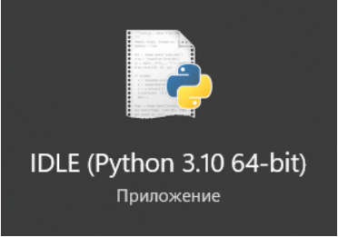
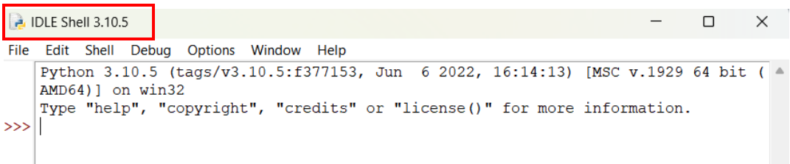
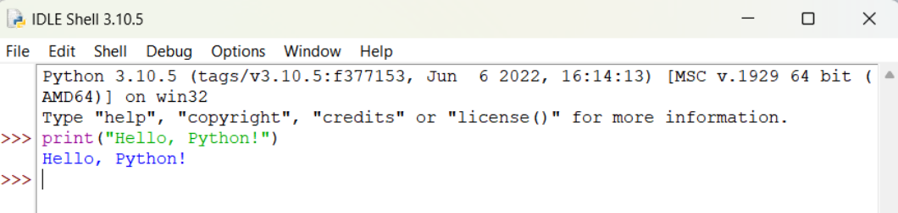
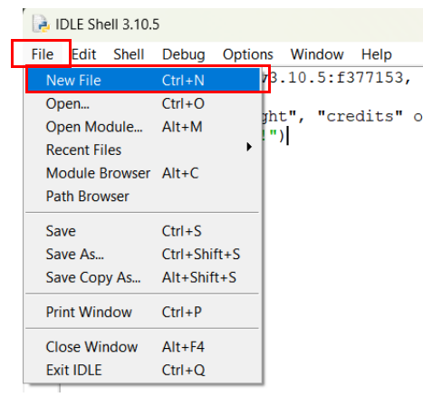
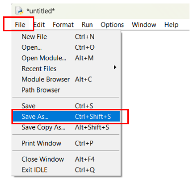
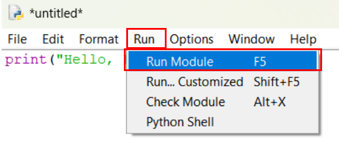

Python-ға кіріспе
Python тілінің тарихы
Python — бұл жоғары деңгейдегі, интерпретаторлы және объектіге бағытталған бағдарламалау тілі. Python тілі 1980-ші жылдары Гвидо ван Россум тарапынан Нидерландта жасалды. Алғашқы нұсқасы 1991 жылы шыққан, және ол қазіргі күнде ең танымал бағдарламалау тілдерінің бірі болып табылады.
Python тілінің қолдану салалары
Python тілінің ерекшеліктері
Python IDLE немесе IDE орнату және қолдану
IDLE: Python-ның стандартты интеграцияланған даму ортасы
IDLE (Integrated Development and Learning Environment) — Python-ның ресми IDE-і. Ол Python бағдарламаларын жазу, орындау және дебаг жасау үшін пайдалануға ыңғайлы құрал болып табылады. IDLE Python орнатылған кезде автоматты түрде орнатылады.
IDLE пайдалану:
- IDLE іске қосу: Windows: Бастау мәзірінен IDLE (Python 3.x) деп жазып іздеңіз.
- Python кодын жазу: IDLE іске қосылғанда, Python Shell ашылады. 
Мұнда Python командаларын тікелей теріп, олардың нәтижелерін көре аласыз. Мысалы, IDLE-ге келесі кодты енгізіп көріңіз:print("Hello, Python!")

- Python файлдарын жазу: File → New File мәзірін таңдап, жаңа Python скриптін жаза аласыз.
Кодты жазғаннан кейін, оны сақтау үшін File → Save As мәзірін таңдаңыз.

- Кодты орындау: Файлды сақтап болғаннан кейін, оны іске қосу үшін Run → Run Module немесе F5 пернесін басыңыз. 
Python үшін басқа интеграцияланған даму орталары (IDE)
IDE мен IDLE арасындағы айырмашылықтар
| Қасиет | IDLE | PyCharm/VS Code |
|---|---|---|
| Қолданушы интерфейсі | Қарапайым, жаңа бастаушыларға ыңғайлы | Күрделі, бірақ толық функционалды |
| Қосымша мүмкіндіктер | Код толықтыру, дебаг жасау қарапайым | Кеңейтілген дебаггер, тестілеу, Git интеграциясы, кеңейтімдер |
| Қолдану саласы | Әдеттегі Python скрипттері үшін қолайлы | Кәсіби даму, деректер ғылымы, веб-даму үшін тиімді |
| Қолдану оңайлығы | Жеңіл және интуитивті | Күрделірек, бірақ өте көп мүмкіндіктерді ұсынады |
Енгізу және шығару функциялары
1. print() командасы
print() командасы Python тілінде мәтін немесе басқа деректерді экранға шығару үшін қолданылады.
Бұл команданы қолданып, біз пайдаланушыға ақпаратты көрсете аламыз.
Мысал 1:
Қарапайым мәтін шығару:
print("Сәлем, әлем!")
Мысал 2:
Өзгермелі мәндерді шығару:
x = 5
print("x мәні:", x)
2. input() командасы
input() командасы пайдаланушыдан мәлімет алу үшін қолданылады. Бұл команда пайдаланушыдан мәлімет сұрағанда экранда сұрақ немесе мәтін көрсетеді, ал пайдаланушы жауап енгізген соң, ол мәнді бағдарламада пайдалану үшін қайтарады.
Мысал 3:
Пайдаланушыдан аты-жөнін сұрау:
name = input("Атыңызды енгізіңіз: ")
print("Сәлем, " + name + "!")
Мысал 4:
Пайдаланушыдан сан енгізу және оны қосу:
age = input("Жасыңыз нешеде? ")
print("Сіздің жасыңыз " + age + " жыл.")
Командаларды бірге қолдану
Кейде біз print() және input() командаларын бірге қолданамыз, мысалы, сұрақ қою және жауап шығару үшін.
Мысал 5:
Пайдаланушының жасын сұрау және оны шығару:
age = input("Жасыңыз нешеде? ")
print("Сіздің жасыңыз " + age + " жыл.")
print() және input() командалары Python тілінің негізгі құралдарының бірі болып табылады. Оларды пайдалану арқылы біз деректерді экранға шығарып, пайдаланушыдан жауап ала аламыз.
Тапсырма 1:
print() командасымен «Мен Python тілін үйреніп жатырмын!» деген хабарламаны шығарыңыз.
Тапсырма 2:
input() командасымен пайдаланушыдан оның жасын сұраңыз және оған «Сіз 18 жастасыз!» деген хабарлама шығарыңыз.
Тапсырма 3:
Келесі кодтың жауабы қандай?
print("Hello", "World", 123)
Тапсырма 4:
Келесі кодтың жауабы қандай?
print("Python" + " is " + "awesome!")
Математикалық операциялар
Python бағдарламалау тілінде математикалық операциялар кез келген сандық есептеулер мен аналитикалық тапсырмаларды шешу үшін қолданылады.
1. Арифметикалық операциялар
Python тілінде арифметикалық операциялар түрлі математикалық есептеулерді орындау үшін пайдаланылады. Python стандартты арифметикалық операцияларды орындауға арналған келесі операторларды ұсынады:
1.1. Қосу (+)
Қосу операциясы екі санды қосады.
a = 5
b = 3
c = a + b
print(c)
# Нәтиже: 8
1.2. Азайту (-)
Азайту операциясы бірінші саннан екінші санды алады.
a = 5
b = 3
c = a - b
print(c)
# Нәтиже: 2
1.3. Көбейту (*)
Көбейту операциясы екі санның көбейтіндісін береді.
a = 5
b = 3
c = a * b
print(c)
# Нәтиже: 15
1.4. Бөлу (/)
Бөлу операциясы бірінші санды екінші санға бөледі және нәтижені нақты сан ретінде қайтарады.
a = 5
b = 3
c = a / b
print(c)
# Нәтиже: 1.6666666666666667
1.5. Бүтін санмен бөлу (//)
Бүтін санмен бөлу екі санды бөлу операциясын орындап, нәтижені бүтін сан ретінде қайтарады (қалдықсыз бөлу).
a = 5
b = 3
c = a // b
print(c)
# Нәтиже: 1
1.6. Қалдықты алу (%)
Қалдықты алу операциясы — екі санды бөлгенде алынған қалдықты қайтарады.
a = 5
b = 3
c = a % b
print(c)
# Нәтиже: 2
1.7. Дәрежелеу ()**
Дәрежелеу операциясы — бірінші санды екінші сан дәрежесіне көтеру.
a = 5
b = 3
c = a ** b
print(c)
# Нәтиже: 125
2. Арифметикалық операцияларды қолдану мысалдары
Мысал 1: Қарапайым арифметикалық есептер
Пайдаланушыдан екі санды алып, оларды қосу, азайту, көбейту және бөлу.
a = float(input("Бірінші санды енгізіңіз: "))
b = float(input("Екінші санды енгізіңіз: "))
қосу = a + b
азайту = a - b
көбейту = a * b
бөлу = a / b
print("Қосу:", қосу)
print("Азайту:", азайту)
print("Көбейту:", көбейту)
print("Бөлу:", бөлу)
Бұл код пайдаланушыдан екі санды сұрайды және оларды әртүрлі операциялар арқылы өңдейді.
Мысал 2: Геометриялық есептер
Тік төртбұрыштың ауданы мен периметрін есептеу:
ұзындық = float(input("Тік төртбұрыштың ұзындығын енгізіңіз: "))
ендік = float(input("Тік төртбұрыштың енін енгізіңіз: "))
аудан = ұзындық * ендік
периметр = 2 * (ұзындық + ендік)
print("Аудан:", аудан)
print("Периметр:", периметр)
Бұл есепте геометриялық фигураның ауданын және периметрін есептеуге арналған.
Мысал 3: Арифметикалық орта есептеу
Бірнеше санның арифметикалық ортасын табу:
a = 5
b = 10
c = 15
орта = (a + b + c) / 3
print("Арифметикалық орта:", орта)
Бұл код үш санның арифметикалық орта мәнін есептейді.
3. Операциялармен жұмыс кезінде қателіктер мен ескертулер
0-ге бөлу: Егер бөлінгіш нөлге бөлінсе, Python ZeroDivisionError қатесін береді.
a = 5
b = 0
c = a / b # ZeroDivisionError
Қарапайым деректер типтері: Python сандармен жұмыс істегенде int (бүтін сан) және float (негізгі сан) деректер типтерін пайдаланады.
4. Арифметикалық операцияларды қолданудағы ерекшеліктер
Жолдармен жұмыс: Python-да сандармен ғана емес, жолдармен де арифметикалық операцияларды қолдануға болады. Мысалы, екі жолды біріктіру үшін + операциясы қолданылады:
жол1 = "Hello, "
жол2 = "world!"
біріктіру = жол1 + жол2
print(біріктіру)
#Нәтиже: Hello, world!
Мәтіндермен операциялар: Мәтіндерді көбейту арқылы қайталанатын жолдарды жасауға болады:
жол = "Python! "
нәтиже = жол * 3
print(нәтиже)
# Нәтиже: Python! Python! Python!
Тапсырма 1:
print() және input() командаларын бірге пайдаланып, пайдаланушыдан екі сан сұраңыз және олардың қосындысын экранға шығарыңыз.
Тапсырма 2:
Пайдаланушыдан екі сан сұраңыз және олардың көбейтіндісін шығарыңыз.
Тапсырма 3:
Сандарды қосу, азайту, көбейту және бөлу операцияларын бірге орындап, нәтижені шығарыңыз.
Тапсырма 4:
Қалғанын (остаток) есептеңіз, яғни бір санды екіншіге бөлгенде қалғанды көрсетіңіз.
Тапсырма 5:
Келесі кодтың жауабы қандай?
print(5 * 3 / 2)
Тапсырма 6:
Келесі кодтың жауабы қандай?
a = 10
b = 20
print(a + b)
Тапсырма 7:
Келесі кодтың жауабын жаз.
print(2 ** 3)
Тапсырма 8:
Келесі кодты орындағаннан кейін нәтиже қандай болады?
print(10 // 3)
Тапсырма 9:
Келесі кодтың жауабын жаз.
print(7 % 3)
Мысал 1: Қарапайым шығару
print("Сәлем, әлем!")
Нәтиже:
Сәлем, әлем!
Бұл мысалда жай ғана мәтін экранға шығарылады.
Мысал 2: Айнымалыны шығару
name = "Айдана"
print("Сәлем, " + name)
Нәтиже:
Сәлем, Айдана
Бұл мысалда Python айнымалыны шығару кезінде оның мәнін қолданады.
Мысал 3: Бірнеше мәндерді шығару
print() функциясында бірнеше мәнді бір уақытта шығару үшін оларды үтір арқылы бөлуге болады.
name = "Айдана"
age = 25
print("Аты:", name, "Жасы:", age)
Нәтиже:
Аты: Айдана Жасы: 25
Бұл жерде print() бірнеше айнымалыны бірден шығарады.
Мысал 4: Форматтау арқылы шығару
print() функциясының f-string (форматталған жол) мүмкіндігін пайдалану арқылы мәтіндерді форматтау өте оңай. Бұл тәсіл Python 3.6 нұсқасынан бастап қолжетімді.
name = "Айдана"
age = 25
print(f"Менің атым {name}, мен {age} жастамын.")
Нәтиже:
Менің атым Айдана, мен 25 жастамын.
Бұл тәсіл айнымалыларды мәтінге қосу үшін өте ыңғайлы.
Пайдаланушыдан мәлімет алу және шығару
Python бағдарламасында пайдаланушыдан деректер алу мен оларды шығару жиі кездесетін іс-әрекет болып табылады. Мысалы, пайдаланушыдан атын, жасын және басқа мәліметтерін алып, оларды экранға шығару.
Мысал 5: Пайдаланушыдан ақпарат алу және оны шығару
name = input("Атыңызды енгізіңіз: ")
age = int(input("Жасыңызды енгізіңіз: "))
print(f"Сәлем, {name}! Сіздің жасыңыз {age}.")
Нәтиже:
Атыңызды енгізіңіз: Айдана
Жасыңызды енгізіңіз: 25
Сәлем, Айдана! Сіздің жасыңыз 25.
Бұл мысалда пайдаланушыдан аты мен жасын сұрап, олардың мәндерін экранға шығару үшін input() және print() функциялары бірге қолданылған.
Пайдаланушыға есеп шығаруды ұсыну
Python тілінде арифметикалық есептеулерді де енгізу және шығару арқылы орындауға болады. Мысалы, екі санды қосып, нәтижесін экранға шығару.
Мысал 6: Екі санның қосындысын есептеу
num1 = float(input("Бірінші санды енгізіңіз: "))
num2 = float(input("Екінші санды енгізіңіз: "))
sum = num1 + num2
print(f"Екі санның қосындысы: {sum}")
Нәтиже:
Бірінші санды енгізіңіз: 5
Екінші санды енгізіңіз: 7
Екі санның қосындысы: 12.0
Бұл мысалда Python пайдаланушыдан екі санды алып, олардың қосындысын есептеп, нәтижесін экранға шығарады.
Тапсырма 1:
Қарапайым енгізу мен шығару.
Пайдаланушыдан атын сұраңыз және оны экранға шығарыңыз.
Тапсырма 2:
Екі санның қосындысын сұрау.
Қосындыны есептеу үшін екі санды сұраңыз және олардың қосындысын экранға шығарыңыз.
Тапсырма 3:
Кодты аяқтаңыз. Қандай айнымалы қалып кетті?
Программада айнымалыларды дұрыс форматтау үшін қажет кодты жазыңыз.
name = "Айдана"age = 25_____
Тапсырма 4:
Кодты аяқтаңыз. Программа нәтиже көрсетеді. Қайсы айнымалылар өзгерді?
name = "Айдана"
age = 25
print(f"Менің атым {name}, мен {age} жастамын.")
Тапсырма 5:
Кодты жазыңыз және бірнеше айнымалыны шығарыңыз:
name = "Айдана"
age = 25
height = 1.75_____
Тапсырма 6:
Программада бірнеше айнымалы мәнін шығарыңыз. Нәтижені форматтау үшін f-string қолдануды үйреніңіз:
name = "Айдана"age = 25height = 1.75_____
Тапсырма 7:
Қандай нәтиже шығады, егер айнымалы мәні өзгертілсе?
name = "Айдана"
age = 25
print(f"Менің атым {name}, мен {age} жастамын.")
Енді жасыңызды өзгертсеңіз, нәтижені не болады?
Жеке тапсырмалар
2 санының 5-ші дәрежесіне шығарыңыз.
Өзіңіз Python кодын жазып, нәтижені экранға шығарыңыз.
Мысал: Егер сіз 2-ні 5-ке шығаратын болсаңыз, нәтиже: 32
Санды санға бөлгендегі бүтін бөлігін есептейтін программа кодын жаз.
Мысал: Егер сіз 10-ды 3-ке бөлсеңіз, нәтиже: 3 (бүтін бөлік)
27 санын 5-ке бөліңіз және қалдығын (остаток) шығарыңыз.
Мысал: Егер сіз 11-ді 4-ке бөлсеңіз, нәтиже: 3 және қалдық: 3
3 санының 4-ші дәрежесіне шығарыңыз.
Мысал: Егер сіз 6-ны 2-ге шығаратын болсаңыз, нәтиже: 36
20 санын 6-ға бөліңіз және нәтижесін шығарыңыз. Сондай-ақ, қалдықты да көрсетіңіз.
Мысал: Егер сіз 18-ны 5-ға бөлсеңіз, нәтиже: 3 және қалдық: 3
Шартты операторлар
Шартты операторлар бағдарламалауда маңызды рөл атқарады, өйткені олар бағдарламаның әртүрлі жағдайларға жауап беру қабілетін қамтамасыз етеді. Python тілінде ең кең таралған шартты операторлар if, elif, және else конструкцияларымен жүзеге асады. Бұл операторлар бағдарламаның орындау бағытын шарттарға байланысты өзгертуге мүмкіндік береді.
1. if операторы
if операторы бағдарламаның белгілі бір бөлігі тек шарт орындалған жағдайда орындалатындығын анықтайды.
Синтаксис:
if шарт:
# шарт орындалған кезде орындалатын код
шарт — бұл шындық мәнін қайтарған кезде кодтың орындалатын шартты өрнек.
: — шарттың соңында қосу керек.
Код ішіндегі барлық операторлар дұрыс орындалу үшін тегістелген (indentation) болуы қажет.
Мысал 1: Қарапайым if операторы
age = 18
if age >= 18:
print("Сіз кәмелет жасқа толдыңыз.")
Нәтиже:
Сіз кәмелет жасқа толдыңыз.
Бұл мысалда жас 18-ге тең немесе үлкен болса, экранға хабарлама шығарылады.
Мысал 2: if операторымен басқа жағдай
number = 7
if number % 2 == 0:
print("Сан жұп.")
Нәтиже:
(Ешнәрсе шықпайды, өйткені 7 — тақ сан)
Бұл жағдайда, тек жұп сан болса ғана шарт орындалып, нәтиже шығарылады.
2. else операторы
else операторы if операторының шарт орындалмаған жағдайында орындалатын кодты анықтайды.
Синтаксис:
if шарт:
# шарт орындалған кезде орындалатын код
else:
# шарт орындалмаған кезде орындалатын код
else операторы міндетті түрде if операторының соңында орналасуы керек.
Мысал 1: if және else операторы
age = 16
if age >= 18:
print("Сіз кәмелет жасқа толдыңыз.")
else:
print("Сіз әлі кәмелет жасқа толмадыңыз.")
Нәтиже:
Сіз әлі кәмелет жасқа толмадыңыз.
Бұл мысалда else операторы шарт орындалмаған жағдайда орындалады.
Мысал 2: Сандарды салыстыру
number = 5
if number > 0:
print("Сан оң.")
else:
print("Сан теріс немесе нөл.")
Нәтиже:
Сан оң.
3. elif операторы
elif (else if) операторы бірнеше шартты тексеруге мүмкіндік береді. Бұл шарттардың біреуі орындалса, сәйкес блок іске қосылады. Бұл конструкция көп жағдайларды тексеру үшін пайдалы.
Синтаксис:
if шарт 1:
# шарт 1 орындалса орындалатын код
elif шарт 2:
# шарт 2 орындалса орындалатын код
else:
# барлық шарттар орындалмаса орындалатын код
Мысал 1: if, elif және else операторлары
age = 20
if age < 13:
print("Сіз балаңыз.")
elif age < 20:
print("Сіз жасөспірімсіз.")
else:
print("Сіз ересексіз.")
Нәтиже:
Сіз жасөспірімсіз
Бұл мысалда бірнеше шарт тексеріледі:
Егер жас 13-тен кіші болса, бала деп есептеледі.
Егер жас 13-20 жас аралығында болса, жасөспірім деп есептеледі.
Басқа жағдайда ересек деп саналады.
Мысал 2: Баллды тестілеу
bal = 85
if bal >= 90:
print("Жақсы!")
elif bal >= 75:
print("Қанағаттанарлық.")
else:
print("Қанағаттанарлықсыз.")
Нәтиже:
Қанағаттанарлық.
Бұл мысалда elif арқылы баллдың аралығын тексеріп, әртүрлі нәтижелер шығарылады.
4. Шартты операторлар қолдану жағдайлары
Мысал 1: Пайдаланушының таңдауын тексеру
tandau = input("Қайсысын таңдаңыз: 1, 2 немесе 3? ")
if tandau == "1":
print("Сіз бірінші опцияны таңдадыңыз.")
elif tandau == "2":
print("Сіз екінші опцияны таңдадыңыз.")
elif tandau == "3":
print("Сіз үшінші опцияны таңдадыңыз.")
else:
print("Жарамсыз таңдау!")
Бұл код пайдаланушыдан таңдау сұрап, оның негізінде шарттарды тексереді.
Мысал 2: Пайдаланушының енгізген мәнін тексеру
san = int(input("Сан енгізіңіз: "))
if san > 0:
print("Сан оң.")
elif san < 0:
print("Сан теріс.")
else:
print("Сан нөл.")
Бұл мысалда енгізілген санның оң, теріс немесе нөл екенін тексеріп, сәйкес нәтижені шығарамыз.
Python тілінде шартты операторлар бағдарламаның түрлі жағдайларға жауап беруін қамтамасыз етеді. if, elif, және else операторларының көмегімен әртүрлі шарттарды тексеріп, бағдарламаның орындау бағытын өзгертуге болады.
Негізгі қадамдар:
if операторы шартты тексереді және егер шарт дұрыс болса, код орындалады.
else операторы шарт дұрыс болмаса, орындалатын кодты анықтайды.
elif операторы бірнеше шартты тексеруге мүмкіндік береді.
Шартты операторлар — кез келген бағдарламаның негізгі құралы, ол қолданушының немесе бағдарламаның жағдайына байланысты әртүрлі әрекеттерді орындауға мүмкіндік береді.
Тапсырма 1:
Пайдаланушыдан жасын сұраңыз. Егер жас 18 немесе одан жоғары болса, «Сіз ересексіз» деген хабарлама шығарыңыз, ал егер жас 18-ден кіші болса, «Сіз балаңыз» деп шығарыңыз.
Тапсырма 2:
Пайдаланушыдан сан енгізу сұралады. Егер сан жұп болса, «Жұп сан» деп шығарыңыз, ал егер тақ болса, «Тақ сан» деп шығарыңыз.
Тапсырма 3:
Үш сан енгізу сұралады. Егер барлық үш сан да оң болса, «Барлық сандар оң» деп шығарыңыз, ал егер бір немесе бірнеше сан теріс болса, «Кем дегенде бір сан теріс» деп шығарыңыз.
Тапсырма 4:
Пайдаланушыдан сан енгізу сұралады. Егер сан 10 мен 100 аралығында болса, «Сан 10 мен 100 арасында» деп шығарыңыз, ал егер сан 100-ден үлкен болса, «Сан 100-ден үлкен» деп шығарыңыз.
Тапсырма 5:
Екі сан енгізу сұралады. Егер бірінші сан екінші саннан үлкен болса, «Бірінші сан үлкен» деп шығарыңыз, ал егер бірінші сан екінші саннан кіші болса, «Екінші сан үлкен» деп шығарыңыз.
Тапсырма 6:
Пайдаланушыдан сан енгізу сұралады. Егер сан 0-ден үлкен болса, «Позитив сан» деп шығарыңыз, егер сан 0-ге тең болса, «Нөл» деп шығарыңыз, ал егер сан 0-ден кіші болса, «Негатив сан» деп шығарыңыз.
Жеке тапсырмалар:
Пайдаланушыдан ауа температурасын сұраңыз және оның негізінде төмендегідей жауаптарды шығарыңыз:
- Егер температура 30°C-ден жоғары болса, "Бүгін өте ыстық!" деген хабарлама көрсетіңіз.
- Егер температура 20°C пен 30°C аралығында болса, "Бүгін жылы ауа райы!" деген хабарлама көрсетіңіз.
- Егер температура 10°C пен 20°C аралығында болса, "Бүгін салқын ауа райы!" деген хабарлама көрсетіңіз.
- Егер температура 10°C-ден төмен болса, "Бүгін өте суық!" деген хабарлама көрсетіңіз.
Тұманның пайда болуы
Егер температура 0°C-ден төмен болса және ауада ылғалдылық 90%-дан жоғары болса, онда тұман болады. Жазып беріңіз, егер осы шарттар орындалса, тұман пайда болады деп жазсын.
Желдің пайда болуы
Егер желдің жылдамдығы сағатына 5 м/с-ден жоғары болса, онда жел пайда болады. Желдің жылдамдығын сұрап, нәтижесін шығарыңыз.
Бұрқасын
Егер ауа температурасы -10°C-ден төмен болса және желдің жылдамдығы 10 м/с-ден жоғары болса, онда бұрқасын болады. Бұл шартты тексеріңіз.
Қардың жаууы
Қар жаууы үшін температура 0°C-ден төмен болуы керек. Егер температура -5°C болса, ол қар жауып тұрғанын көрсетсін.
Климаттың өзгеруі
Егер температура соңғы 10 жылда жылына 0.5°C-ге артып отырса, онда климат өзгеруде деп айтуға болады. Осы шартты қолдана отырып, климаттың өзгеруі туралы шешім шығарыңыз.
Циклдер: for және while
Циклдер — бұл белгілі бір шарт орындалғанша немесе бірнеше рет қайталанатын әрекеттерді орындауға мүмкіндік беретін бағдарламалау құрылымдары. Python тілінде циклдер өте маңызды құрал болып табылады, өйткені олар бағдарламаларды қысқартуға, тиімдірек жазуға және көп мәліметтермен жұмыс істегенде уақытты үнемдеуге мүмкіндік береді. Бұл бөлімде for және while циклдерінің қалай жұмыс істейтінін, олардың қолдану тәсілдерін қарастырамыз.
1. for циклі
for циклі — Python-дағы ең кең тараған циклдердің бірі, ол белгілі бір элементтер тізімін немесе диапазонды айналып өтеді. for циклі арқылы тізімдер, кортеждер, жолдар және диапазондар сияқты деректер құрылымдарын оңай өңдеуге болады.
Синтаксис:
for айнымалы in деректер:
#Кодтың орындалатын бөлігі
айнымалы — әрбір айналымда деректер құрылымының элементіне сілтеме жасайды.
деректер — циклдің қайталанатын элементтері бар деректер құрылымы.
Мысал 1: for циклінің қарапайым қолданылуы
for i in range(5): #0-ден 4-ке дейінгі сандарды аламыз
print(i)
Нәтиже:
0
1
2
3
4
Бұл мысалда range(5) функциясы 0-ден 4-ке дейінгі сандарды тізіп, for циклі оларды кезекпен шығарады.
Мысал 2: Тізімдегі элементтерді өңдеу
zhemister = ["Алма", "Алмұрт", "Банан"]
for zhemis in zhemister:
print(zhemis)
Нәтиже:
Алма
Алмұрт
Банан
Бұл мысалда for циклі тізімдегі әрбір элементті алады және оны басып шығарады.
Мысал 3: Диапазонды қолдану
range() функциясы белгілі бір диапазонда сандарды генерациялау үшін қолданылады.
for i in range(1, 10, 2): #1-ден 9-ға дейінгі тақ сандарды басып шығару
print(i)
Нәтиже:
1
3
5
7
9
range(1, 10, 2) — 1-ден бастап 10-ға дейін, қадам 2 болатын сандарды тізіп шығады.
Мысал 4: Веб-беттегі әріптерді санау
soz = "Python"
for arip in soz:
print(arip)
Нәтиже:
P
y
t
h
o
n
Бұл мысалда for циклі арқылы әріптерді бөліп шығарады.
2. while циклі
while циклі белгілі бір шарт орындалғанша әрекеттерді қайталауға мүмкіндік береді. Бұл цикл алдымен шартты тексереді, содан кейін ғана әрекеттер орындалады. Егер шарт дұрыс болса, цикл қайтадан орындалады.
Синтаксис:
while шарт:
#Кодтың орындалатын бөлігі
Шарт — бұл циклдің орындалуы үшін қажетті логикалық шарт.
Циклдің ішінде шарт қанағаттанарлық болса, оның денесі орындала береді.
Мысал 1: while циклімен санау
i = 0
while i < 5:
print(i)
i += 1 # i мәнін 1-ге арттыру
Нәтиже:
0
1
2
3
4
Бұл мысалда while циклі i < 5 шарты дұрыс болғанда орындалады, және i әр қайталануда 1-ге ұлғаяды.
Мысал 2: Шартты қанағаттандырғанша қайталау
number = int(input("Сіз қанша жасқа толдыңыз? "))
while number < 18:
print("Сіз әлі кәмелет жасқа толмағансыз.")
number = int(input("Жасыңызды қайта енгізіңіз: "))
print("Сіз кәмелет жасқа толдыңыз.")
Бұл мысалда while циклі 18 жасқа толмаған жағдайда қайта сұрақ қойып, жасы 18-ден асқан кезде цикл тоқтайды.
Мысал 3: Шексіз цикл
while True:
response = input("Шығу үшін 'exit' деп жазыңыз: ")
if response == "exit":
break
else:
print("Сіз жазғаныңыз:", response)
Бұл мысал шексіз цикл құрады және пайдаланушы exit деп жазғанша сұрақ қоя береді.
3. Циклдермен жұмыс істегенде қателіктерді болдырмау
Шексіз циклдардан аулақ болу: Егер шарт ешқашан орындалмаса немесе циклдың шартын жаңарту ұмытылса, онда шексіз цикл болады. Мысалы, while True циклін қателіксіз аяқтау үшін break операторын қолдану қажет.
Цикл ішінде айнымалының мәнін өзгерту: Циклдың шартын әр қайталанғанда дұрыс тексеру үшін, айнымалының мәнін өзгерту керек. Мысалы, i += 1 немесе i = i + 1 сияқты өзгерістер.
4. Циклдармен қолданылатын қосымша операторлар
break операторы
break операторы циклді тоқтату үшін қолданылады. Циклдың шартын орындауға болмайтын жағдайда немесе арнайы жағдайларда циклды аяқтауға болады. Мысалы:
for i in range(10):
if i == 5:
break # 5 болған кезде цикл тоқтайды
print(i)
Нәтиже:
0
1
2
3
4
continue операторы
continue операторы циклдің келесі итерациясына өту үшін қолданылады. Бұл оператор сол кезеңдегі кодтың қалған бөлігін өткізіп, келесі қайталануға өтеді. Мысалы:
for i in range(5):
if i == 3:
continue # 3 болған кезде цикл тоқтайды
print(i)
Нәтиже:
0
1
2
4
Циклдер бағдарламалауда қайталанатын тапсырмаларды орындауға мүмкіндік береді. Python тілінде for және while циклдері өте пайдалы құралдар болып табылады.
for циклі белгілі бір элементтер тізімін немесе диапазонды айналып өту үшін қолданылса, while циклі шарт орындалғанша қайталанатын әрекеттер үшін пайдаланылады.
break және continue операторлары циклдармен жұмыс істегенде арнайы жағдайлар мен басқаруды тиімді ету үшін пайдаланылады.
Тапсырма 1:
Қарапайым цикл. 1-ден 5-ке дейінгі сандарды шығарыңыз.
Python кодын жазыңыз, ол 1-ден 5-ке дейін сандарды экранға шығарады.
Тапсырма 2:
while циклының көмегімен 10-нан 1-ге дейінгі сандарды шығарыңыз.
Python кодын жазыңыз, ол 10-нан 1-ге дейінгі сандарды шығарады.
Тапсырма 3:
for циклы арқылы 1-ден 100-ге дейінгі барлық жұп сандарды шығарыңыз.
Тапсырма 4:
while циклы арқылы пайдаланушыдан сан сұраңыз және сан теріс болғанша сұрауды жалғастырыңыз.
Тапсырма 5:
for циклы арқылы 0-ден 20-ға дейінгі тақ сандарды шығарыңыз.
Тапсырма 6:
1-ден 10-ға дейінгі сандардың квадратының қосындысын есептеңіз.